- Scientific Visualization: Python + Matplotlib 책에는 최고 수준의 시각화 기술이 담겼습니다.
- 높은 수준에 비해 설명이 다소 짧아 초심자에게 어려워 보였습니다.
- 저자인 Nicolas P. Rougier 박사님의 허가 하에 일부를 해설합니다.
- 이 시리즈는 해외 독자를 위해 영어를 회색 상자 안에 병기합니다.
- Scientific Visualization: Python + Matplotlib contains cutting-edge visualization skills and examples of Matplotlib and Python.
- Despite its high quality content, relatively short explanations in the book may prevent the readers from fully grasping all of its contents.
- With the permission of the author, Dr. Nicolas P. Rougier, I'll try to help the beginners understand the more complex concepts within the book by providing explanations and commentary where needed.
- This series will be posted in English as well as Korean, for international readers.
영어 감수: EY한영회계법인 이지수 시니어
Scientific Visualization: Python + Matplotlib
github: Nicolas P. Rougier
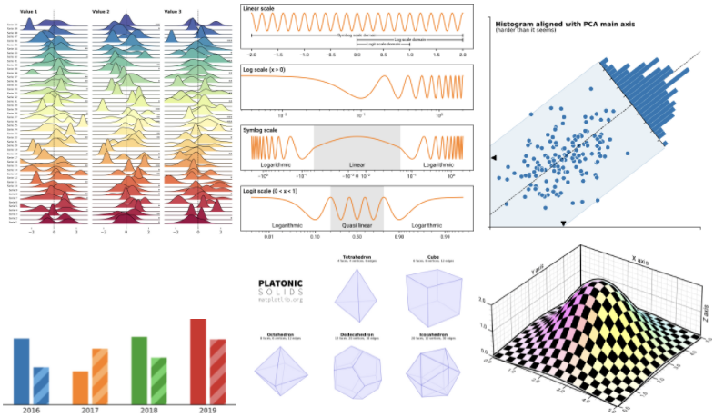
1. Rotated Histogram
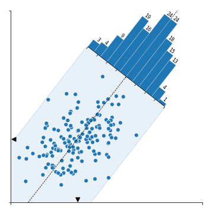
- 이번에 살펴볼 그림은 scatter plot에 histogram이 겹친 모양입니다.
- 데이터의 PC1 축 방향으로 돌려 놓인 histogram은 PC2 방향의 데이터 분포를 나타내고 있습니다.
- We are going to investigate a scatter plot with a histogram.
- The histogram is rotated and placed along PC1 axis, representing data distribution along the PC2's direction.
2. Matplotlib coding
- 저자는 Matplotlib 자체 기능만을 사용해서 그렸습니다.
- 저자의 코드를 따라가며 어떻게 그렸는지 확인해 보겠습니다.
- The author created the figure with Matplotlib only.
- We'll see the author's code is working by following every step.
2.1. import libraries
- 코드는 라이브러리를 불러오는 것부터 시작합니다.
Polygon,Affine2D,floating_axes처럼 전에 보기 힘들었던 기능을 불러옵니다.- numpy random seed를 설정하여 재현성을 확보합니다.
- We start by importing the libraries.
- Unlike "normal" visualizations, the modules named
Polygon,Affine2D,floating_axesare imported. - Reproducibality is secured by setting numpy random seed.
1 | %matplotlib inline |
2.2. Affine transformation
- Affine 변환은 공선성과 거리 비율을 유지하는 모든 종류의 형태 변환을 말합니다.
- Matplotlib은 2차원 Affine 변환을 구현하는
Affine2D함수를 지원합니다. - 본격적으로 코드를 들여다보기 전에
Affine2D용법을 확인합니다.
- An affine transformation is any transformation that preserves collinearity (i.e., all points lying on a line initially still lie on a line after transformation) and ratios of distances (e.g., the midpoint of a line segment remains the midpoint after transformation).
- Matplotlib provides
Affine2Dfunction in which 2-dimensional Affine transformation is implemented. - Before diving into the original code, we need to learn how to use
Affine2D.
- 7개의 점으로 이루어진 예제 데이터 S0을 만듭니다. 각 점은 x, y 좌표가 있으므로 형상은 (7, 2)가 됩니다.
- 각 점마다 다른 색을 입히기 위해 0부터 1까지 7개의 값 데이터 Sc를 만듭니다.
numpy.linspace()를 사용합니다. Affine2D().rotate_deg(30).transform(S0)명령으로 S0를 30도 회전해 S1을 얻습니다. 방향은 반시계 방향입니다.
- S0, sample data consisted of 7 points, is prepared on cartesian coordinate system. Each point has x and y coordinate, therefore shape of S0 is (7, 2).
- Sc, a dataset with 7 values are prepared by using
numpy.linspace()to paint each point with a differnt color. - S1 is obtained by rotating S0 by 30 degree in a counterclockwise direction by using
Affine2D().rotate_deg(30).transform(S0).
- S0과 S1를 그려 데이터가 의도대로 변환되었음을 확인합니다.
- Successful rotational transform is confirmed by visualization of S0 and S1.
1 | # numpy array |
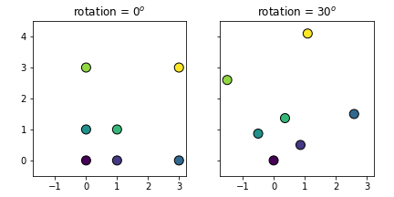
- 다른 방식으로도 변환할 수 있습니다. Matplotlib Rectangle 객체 R0을 대상으로 합니다.
- Rt라는 이름의 변환을 선언하고
R0.set_transform(Rt)를 적용하면 R0의 좌표가 바뀝니다.
- We can get the same result by using a different method. We will rotate R0, a Matplotlib Rectangle object.
- Declerating Rt as the designation and applying
R0.set_transform(Rt)to R0 changes the coordinates of itself.
1 | from matplotlib.patches import Rectangle |
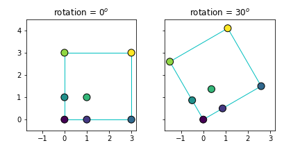
- (150, 2) 데이터 Z0를 생성하고 같은 방식으로 원본 데이터를 35도 회전해 Z1를 만듭니다.
- Z1의 x, y 평균([ 0.13746892, -0.02793329])을 구해 Zm에 저장합니다.
- Create (150, 2) points data Z0 then rotate 35 degree in the same manner to generate Z1.
- Calculate mean of Z1 ([ 0.13746892, -0.02793329]) and store it as Zm.
1 | # Generate some data |
1 | # Visualize |
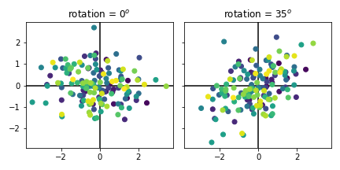
2.3. Principal Component Analysis (PCA)
numpy.linalg.eig를 사용해 PCA를 수행합니다.- eigenvalue V와 eigenvector W로부터 PC1과 PC2를 구하고 각각 T(PC1)와 O(PC1과 직각. PC2)으로 복사합니다.
- Perform PCA using
numpy.linalg.eig(). - Get PC1 and PC2 from the eigenvalue V and eigenvector W, and copy them as T(tangent to PC1) and O(orthogonal to PC1, equivalent to PC2).
1 | # Principal components analysis |
1 | # visualize |
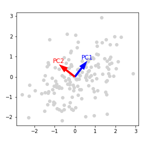
- rotation, T, O를 확인합니다.
- Let's take a look at rotation, T, and O.
1 | print(f"rotation = {rotation}") |
- 실행 결과 output
1
2
3rotation = 37.89555000213857
tangent vector = [0.61422391 0.78913179]
orthogonal vector = [-0.78913179 0.61422391]
2.4. scatter plot and PC1 axis
- 이제 본격적으로 시각화를 수행합니다.
- scatter plot을 그리고 x, y 축의 범위와 값을 지정합니다.
- PC1 축을 따라 점선을 긋습니다.
- Finally data visualization is about to begin.
- Draw a scatter plot; subsidiary x, y ticks and ticklabels are controlled.
- PC1 axis is marked as a dashed line.
1 | # Draw |
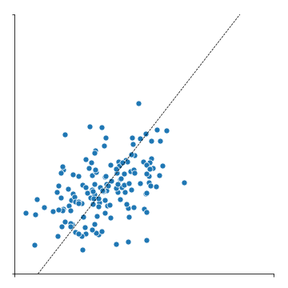
2.5. Bounding box along PCA axes
- 데이터 전체를 감싸는 bounding box를 그릴 차례입니다.
- 데이터 Z1을 x축을 따라 역회전시킨 후 y 절대값의 최대치로부터 box 높이의 절반 d를 구합니다.
- O, T, d로부터 bounding box의 네 꼭지점을 구해 P2에 저장합니다.
- 마지막으로 P2로부터 Polygon 객체를 생성해
ax1.add_patch()로 그림에 붙입니다.
- It's time to draw bounding box around the points.
- Rotate the Z1 along its X-axis, then find d which is half of the box's abolute y value.
- Get 4 points of the bounding box from O, T and d, store as P2.
- Finally, create Polygon object from P2 and add it by using
ax1.add_patch().
1 | # Compute the width of the distribution along orthogonal direction to the PCA |

- bounding box에 윤곽선을 추가하고 축 위에 평균 Zm을 표시하는 삼각형 마커를 추가합니다.
- Zm, d, T, O로부터 윤곽선 좌표 P3과 P4를 구해
ax1.plot()으로 조금 진한 윤곽선을 입힙니다.
- Boundary of the bounding box should be more clear, and the triangle markers denoting means Zm should be visible on each axis.
- Get the coordinates of the outline, P3 and P4, from Zm, d, T and O, then apply a slightly darker outline by using the command
ax1.plot().
1 | # P3, P4 : edges of P2 parallel to PC1 |
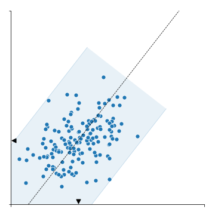
2.6. Add Axes for rotated histogram
- 이번 시각화의 하일라이트, 회전된 histogram을 붙일 차례입니다.
- 회전된 histogram을 붙이기 위해서는 정확한 자리에 정확한 각도와 크기로 새 Axes를 형성하고
- 이 Axes 위에 histogram을 회전시켜 붙여야 합니다.
- The next step is the grand finale of this visualization, the rotated histogram.
- In order to add rotated histogram, new Axes should be formed at the exact site with the exact angle and size.
- And then histogram is added with the rotation.
- 정사각형 모양의 공간을 PC1 방향의 연장선에 형성할 것입니다.
- 높이와 너비는 P2로 만들어진 Polygon의 높이와 동일합니다.
- histogram이 놓일 공간의 중심 좌표 C를 구합니다.
- We are now going to form a square shaped space in the direction, and as an extension, of PC1.
- The height and width of the space is same as the height of Polygon based on P2.
- The center coordinate C of the histogram space is calculated.
1 | # 1. Compute the center of the histogram |
1 | # visualization |
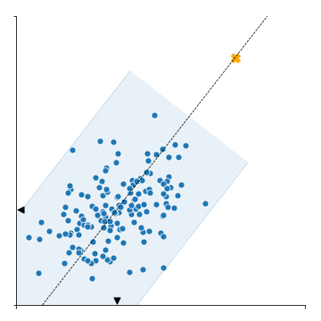
- histogram이 놓일 공간의 높이 h0와 너비 w0를 구합니다.
- Calculate the height h0 and width w0 of the histogram space.
1 | # 2. Compute the coordinate and the size in normalized figure coordinates |
1 | #visualize |
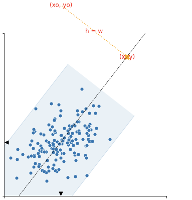
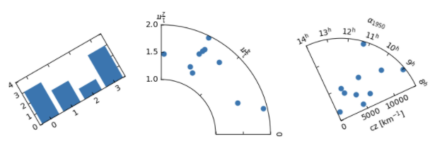
- 이 치수를 바탕으로 histogram이 놓일 Axes ax2를 생성합니다.
- 불규칙한 Axes를 만들 때
floating_axes를 사용합니다.
- Based on this dimensions Axes for histogram, ax2 is generated.
-
floating_axesis used for irregular Axes.
1 | # 3. Create the secondary axis |
1 | # visualization |
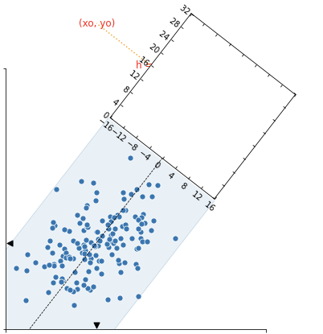
2.7. Add Rotated histogram and axis settings
- 이제 공간이 마련되었으니 histogram을 붙일 차례입니다.
- 회전된 공간에 데이터를 넣으려면
ax2.get_aux_axes(transform)을 사용해 별도의 Axes를 만들어야 합니다. - PC2 방향의 histogram을 얻기 위해
numpy.histogram(-Z @ PC1)을 사용했습니다. PC1에 수직 방향의 빈도를 구하라는 뜻입니다.
- Since the new Axes is prepared, it is time to add the histogram.
- To visualize data on a rotated space, another Axes should be generated using
ax2.get_aux_axes(transform). -
numpy.histogram(-Z1 @ PC1)is used to obtain histogram along the PC2 axis. The code means return data frequences orthogonal to PC1 axis.
1 | # 5. Some decoration the secondary axis |
- 마지막으로 히스토그램 숫자를 기입합니다.
- At last, put numbers on top of the bars of histogram.
1 | # 7. Adding some labels |
3. Conclusion
- 코드를 여러 부분으로 나누어 그림이 만들어지는 과정을 코드와 함께 살펴봤습니다.
- 리뷰 과정에서 원본을 일부 수정한 Pull Request가 적용되었습니다. 이 글은 수정본을 기반으로 작성되었습니다.
- Matplotlib은 표현력이 매우 강한 라이브러리입니다.
- 여러분의 상상을 실현하는 데, Nicolas의 훌륭한 코드를 이해하는 데 도움이 되시길 바랍니다.
- In this article we divide the source code into many parts, and looked through how the final figure was created.
- A couple of changes were suggested as a form of Pull Request to correct small errors, and accepted. This article is written based on the revised version of mine.
- Matplotlib is a library with a strong power of expression.
- I hope this article to be an assistant to realize your imagination, as well as help you understand Nicolas's excellent code.